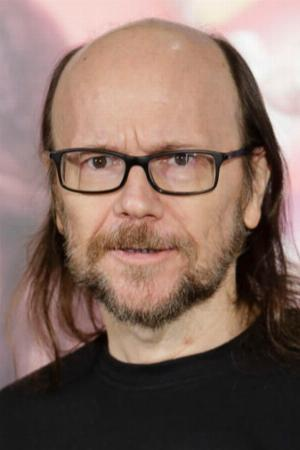

Torrente es un policía español, fascista, machista, racista, alcohólico y del Atleti. Tiene un vecino llamado Rafi, al que le gustan las películas de acción y las pistolas, y que vive con su madre y su prima Amparito, una ninfómana. Juntos, Torrente y Rafi, patrullarán por la noche las calles de la ciudad.
Personajes principales
| REPARTO | DESCRIPCIÓN |
|---|---|
| Santiago Segura  | Santiago Segura Silva es un actor y cineasta español, popular por su saga de Torrente. Ha trabajado también, aunque en menor medida, como presentador de televisión, actor de doblaje y guionista de historietas. |
| Javier Cámara | Javier Cámara Rodríguez es un actor español. Ha ganado dos Premios Goya, y en 2022 fue galardonado con la Medalla de Oro al Mérito en las Bellas Artes que otorga el Ministerio de Cultura de España. |